What it really is
A loop of about three hundred and fifty kilometres starting from the town of Ha Giang, in the province of the same name, in the far north of Vietnam. It runs along the Chinese border and crosses a limestone plateau listed as a UNESCO Global Geopark.
It is not a motorbike ride for beginners. The road climbs, drops, clings to the cliffside and tightens into hairpins with no barrier. The Ma Pi Leng Pass, which towers several hundred metres above the Nho Que river, is its most impressive and most photographed section.
It is also the poorest and most mountainous region of the country, mostly home to ethnic minorities. You sleep in homestays, you eat what is served, and comfort is not the point.
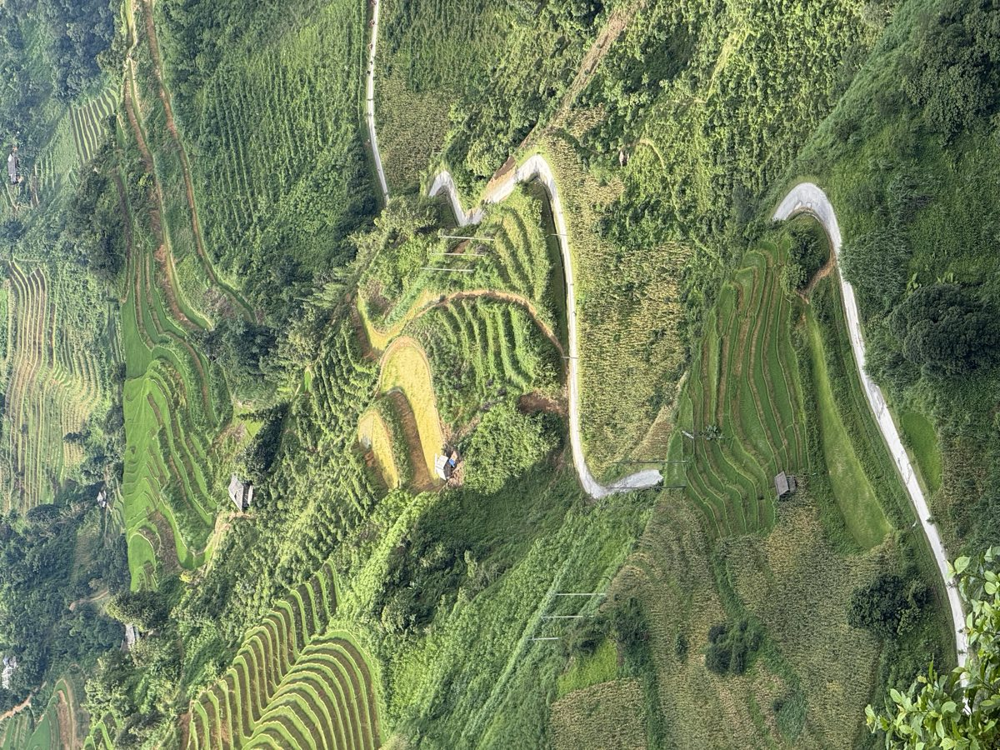
What stays with you once you are home. The atmosphere with the other backpackers, first of all. You set off with strangers and finish the loop together.
The drivers, next. Ours partied with us in the evenings, which I did not expect at all. They are not distant guides, they are part of the group.
And the scenery, of course, but the whole way. It is not one or two viewpoints, it never stops.
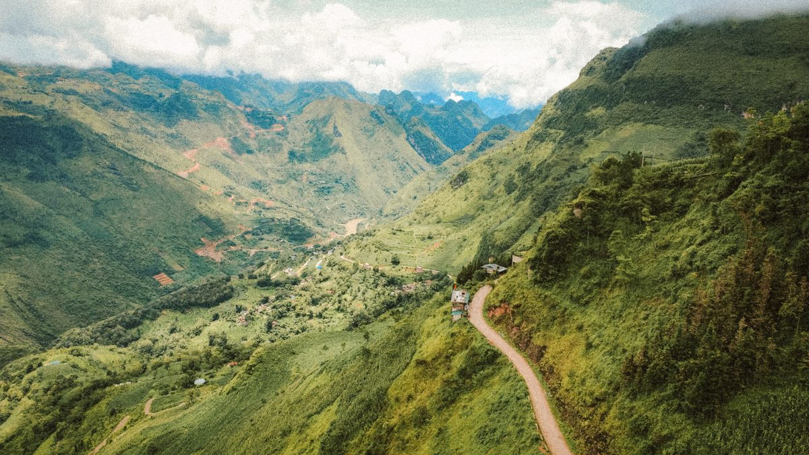
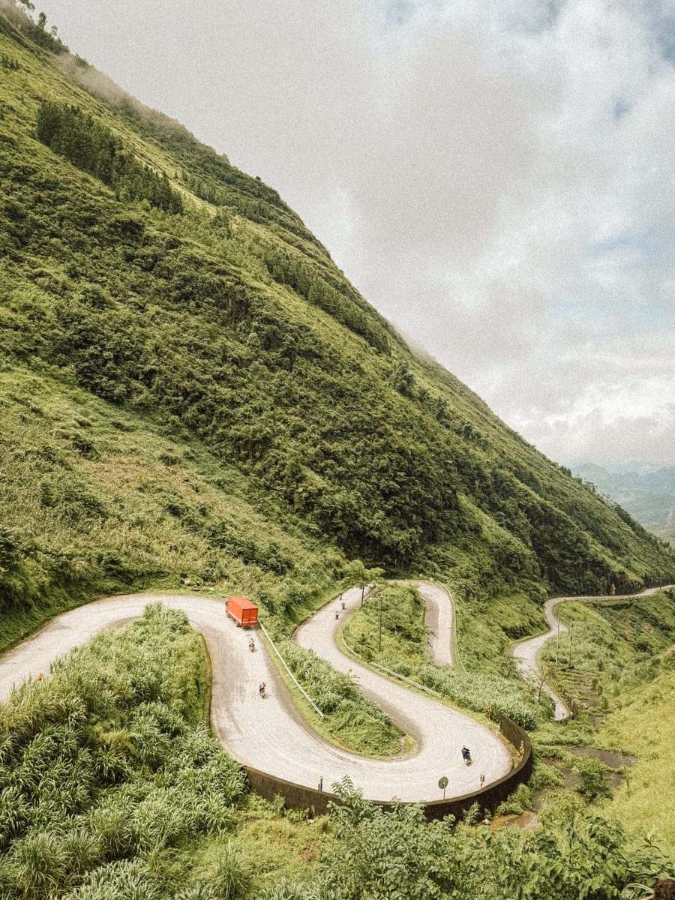
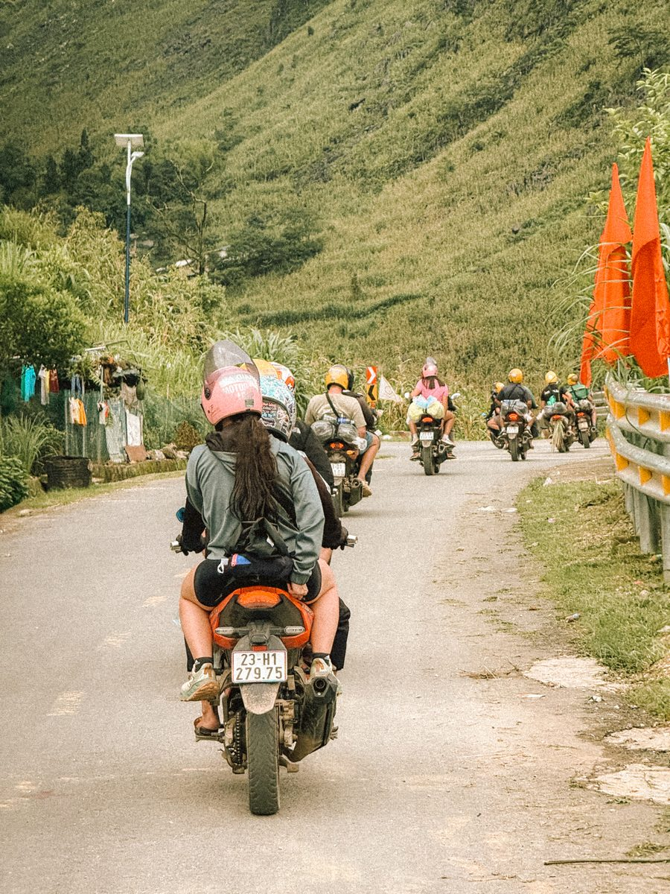
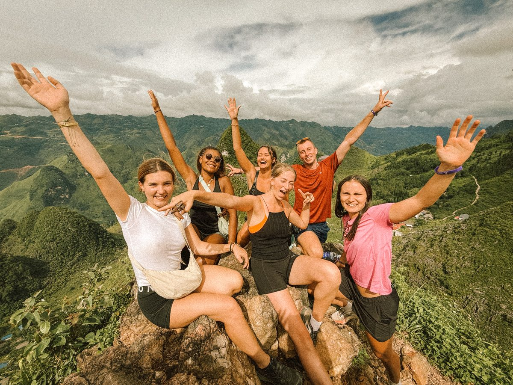
When to go
September to November is the best window. The summer rains are over, the air is dry, and the rice terraces turn golden before the harvest. It is also buckwheat flower season on the plateau.
March and April come right after. It is mild, it rains little, the peach and plum trees are in bloom, and there are far fewer people on the road.
July and August are the worst time. It is the heart of the monsoon, the road becomes slippery, visibility drops and landslides regularly cut off sections of road.
From December to February, it gets genuinely cold at altitude. The landscape is often lost in the mist, and homestays are not heated.
We went in July. It is not the ideal season, right in the middle of the rains. We were lucky, it did not rain much and everything went well.
I mention it because you cannot plan luck: if you can choose your dates, do not take July as your reference.
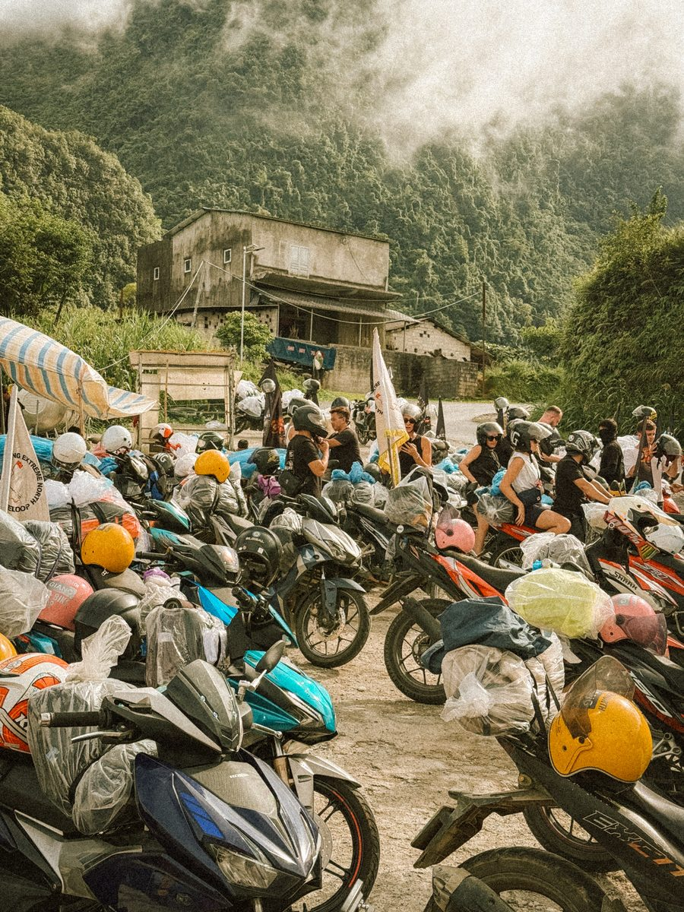
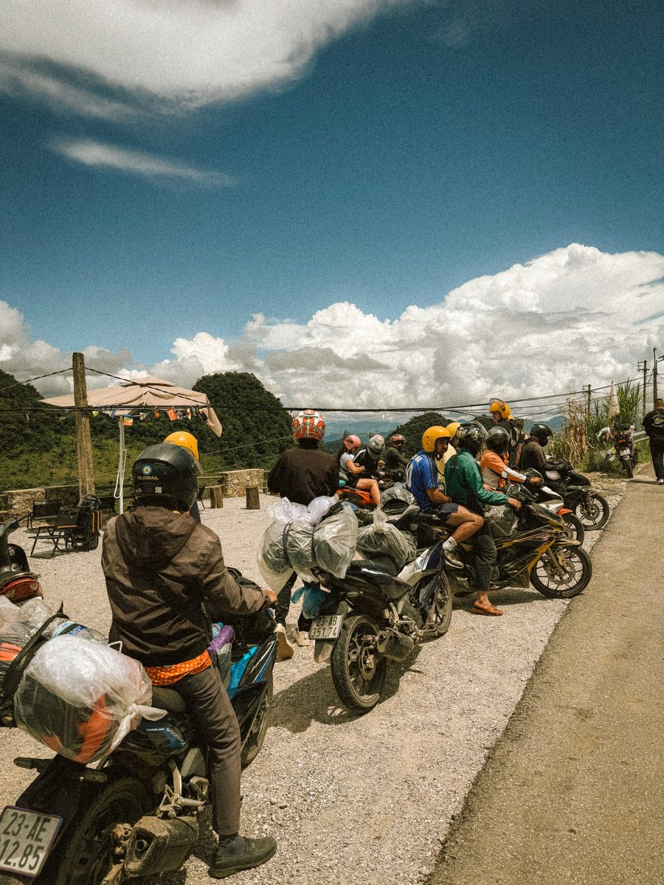
Getting there from Hanoi
The town of Ha Giang is about three hundred kilometres north of Hanoi, six to seven hours by road. There is no airport and no train.
The most common option is the sleeper night bus. It leaves Hanoi late in the evening and arrives in Ha Giang early in the morning, so you can start the loop straight away without losing a day. The upper berths at the front are the least bumpy.
There are also so called limousine minibuses, more expensive, faster and much more comfortable, but they run during the day and therefore cost you a day.
Most agencies that organise the loop sell the transport from Hanoi in the same package. It is often simpler, and rarely more expensive.
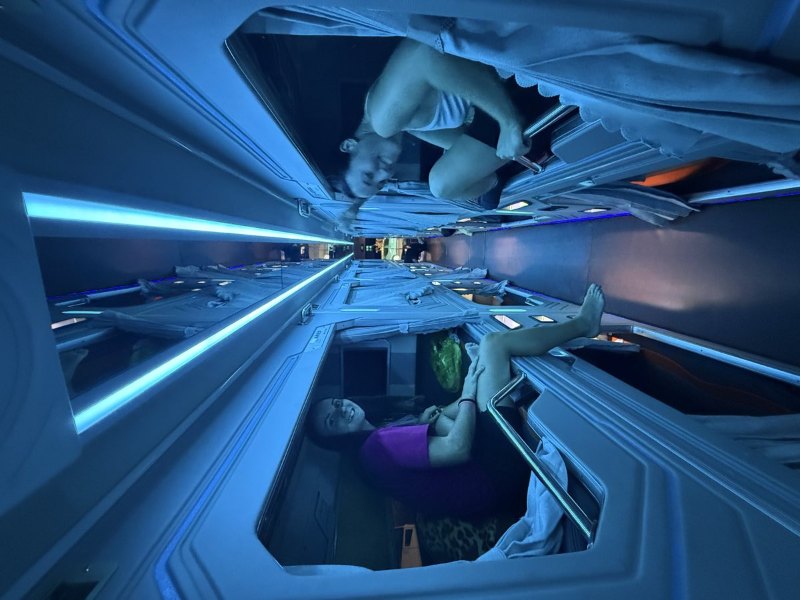
Ride yourself or sit behind
It is the only really important decision of the trip, and you make it before you leave.
Sitting behind a local rider. This is what is called an easy rider: you are the passenger, a driver from the region rides, and you look at the scenery instead of the road. It has become the most popular option among foreign travellers, and by far the safest if you do not have thousands of kilometres of motorbike riding behind you.
Riding yourself. Possible, but with a condition that is often glossed over. Vietnam only recognises international driving permits issued under the 1968 Vienna Convention, and you need the motorbike category. Without this document, you are riding without a valid licence under Vietnamese law. The fine ranges from two to four million dong, about seventy five to a hundred and fifty euros, and above all your travel insurance will not cover you in an accident.
That last point is the real issue. The roads of Ha Giang are unforgiving, falls are frequent, and a medical evacuation from northern Vietnam runs into tens of thousands of euros. Check what your policy says about riding two wheelers before renting anything.
There is a middle ground: riding yourself in a group led by a guide. You keep the handlebars, someone knows the road, and the group stops in the right places. The licence question, however, remains.
Check what your insurance covers (in French)
What we did. Four days and three nights, with the Jasmine agency, and drivers. Nobody in the group touched the handlebars.
I recommend both: Jasmine, and not riding yourself. On these roads, being a passenger changes everything: you look at the scenery instead of watching the next bend, and you do not gamble with your insurance. The rider knows the road by heart, knows where to stop and when to cross the passes. None of that can be improvised in three days.
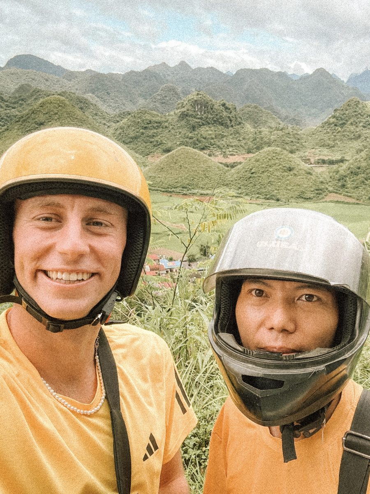
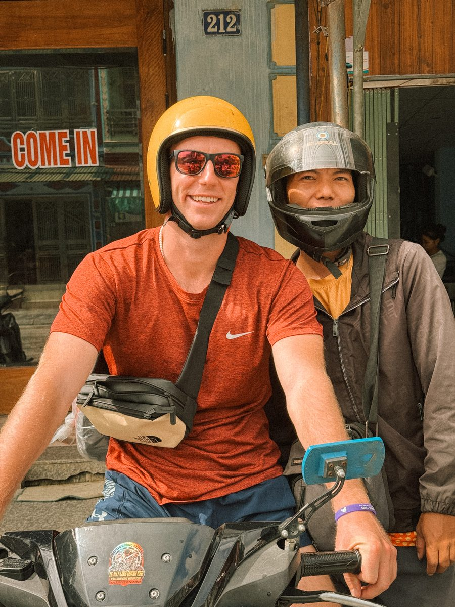
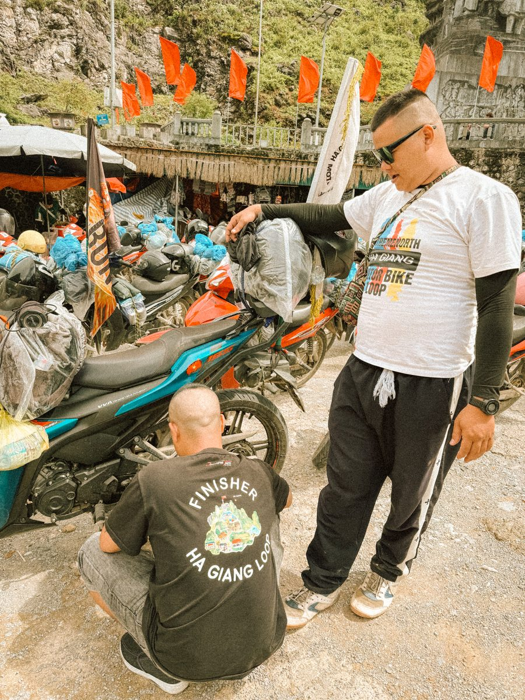
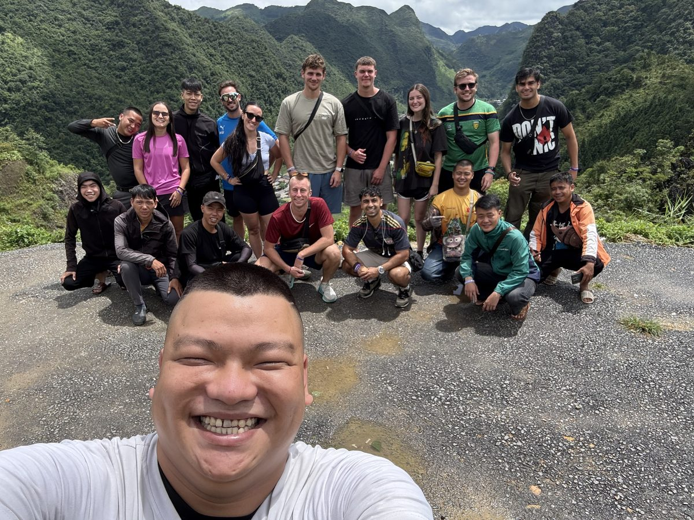
The border area permit
This is the new rule to know about, and many online guides are not up to date yet.
Since June 2026, the provincial authorities have been genuinely enforcing the requirement for foreign travellers to hold a border area permit. The loop runs along China, and the districts it crosses are classified as a sensitive area.
The permit covers the districts of Quan Ba, Yen Minh, Dong Van, Meo Vac and Du Gia, as well as the Lung Cu flag tower, right next to the border. In other words, almost the entire route.
It costs between two hundred thousand and two hundred and fifty thousand dong, about eight to ten euros. You get it at the immigration office in the town of Ha Giang, ideally the day before you set off. Most agencies take care of it and include it in their package: that is the simplest solution, and it is worth checking before you book.
Keep your passport on you throughout the loop. Police checks happen, and turning up without a permit means a fine and being sent back.
The itinerary, day by day
The classic loop is done clockwise. Three days are enough if you do not plan to stop for long, four is the right pace, five allows detours to Du Gia or Lung Cu.
We did it in four days and three nights, and that is the plan I detail below.
- Ha Giang to Yen MinhThe Quan Ba Heaven Gate and the first passes
- Yen Minh to Dong VanThe limestone plateau, the Vuong palace, the old town
- Dong Van to Meo VacThe Ma Pi Leng Pass and the Nho Que river
- Back to Ha GiangVia Du Gia, or more directly via Mau Due
Day one, to Yen Minh
You leave the town of Ha Giang and the road climbs straight away. First stop at the Quan Ba Heaven Gate, which overlooks two round hills that everyone photographs.
What follows is a series of passes and villages clinging to the slopes. It is the gentlest of the four days, a good warm up if you are riding yourself.
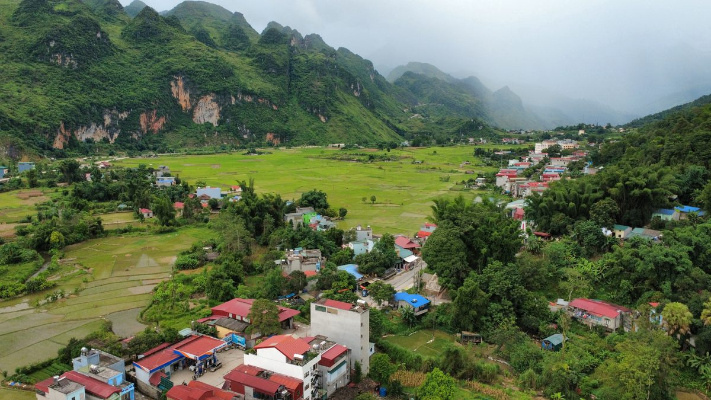
Day two, to Dong Van
The landscape changes completely. You enter the limestone plateau, a jumble of grey peaks where farmable land is counted in square metres between the rocks.
On the way, the palace of the Hmong king in Sa Phin, a stone and wood building constructed at the start of the twentieth century. A possible detour to the Lung Cu flag tower, the northernmost point of the country, a few hundred metres from China.
Dong Van and its old town mark the stop. The Sunday morning market, if it falls during your visit, is worth planning around.
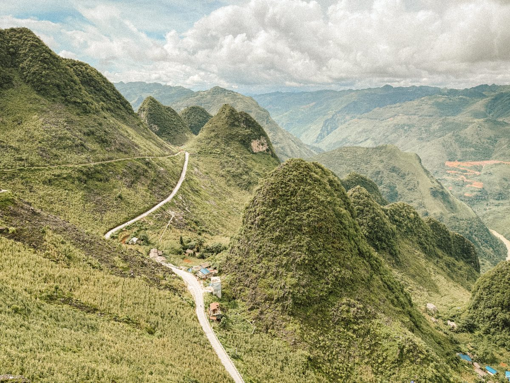
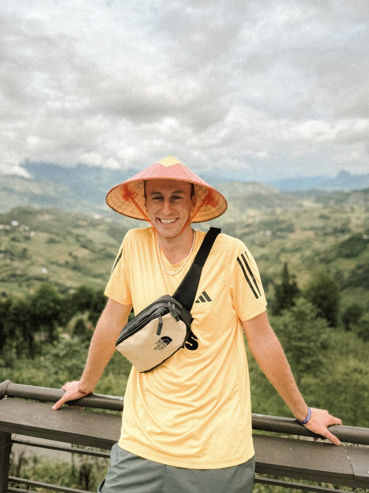
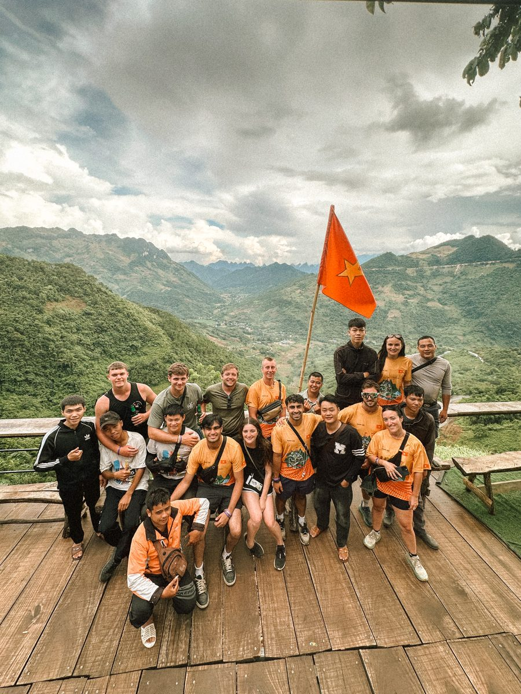
Day three, the Ma Pi Leng Pass
This is the part everyone is waiting for. Twenty kilometres of road carved into the cliffside between Dong Van and Meo Vac, with the Nho Que river flowing eight hundred metres below in a green canyon.
Down below, a boat goes up the river for about an hour. You have to go down to the jetty on a steep track, and it is one of the few paid activities on the loop that is really worth the price.
Meo Vac is a small town with no particular charm, used as a stopover. Its Sunday market, however, is one of the liveliest in the region.
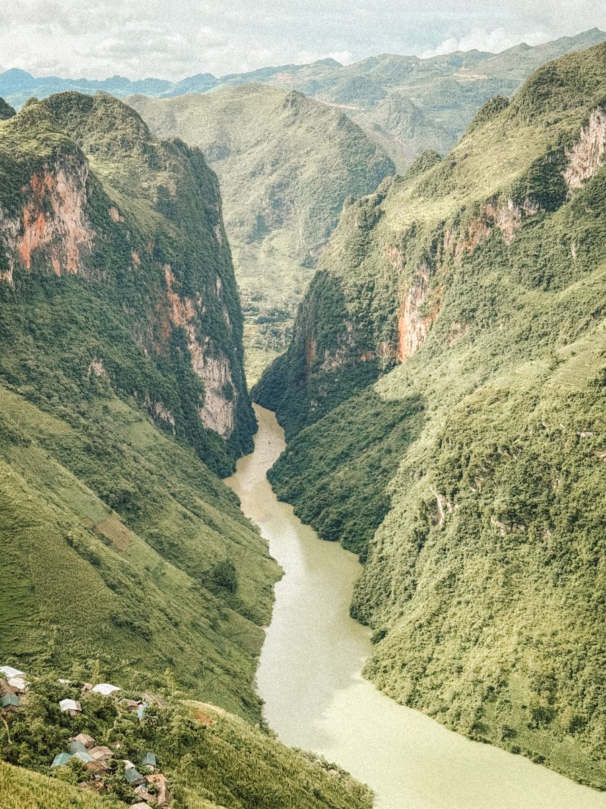
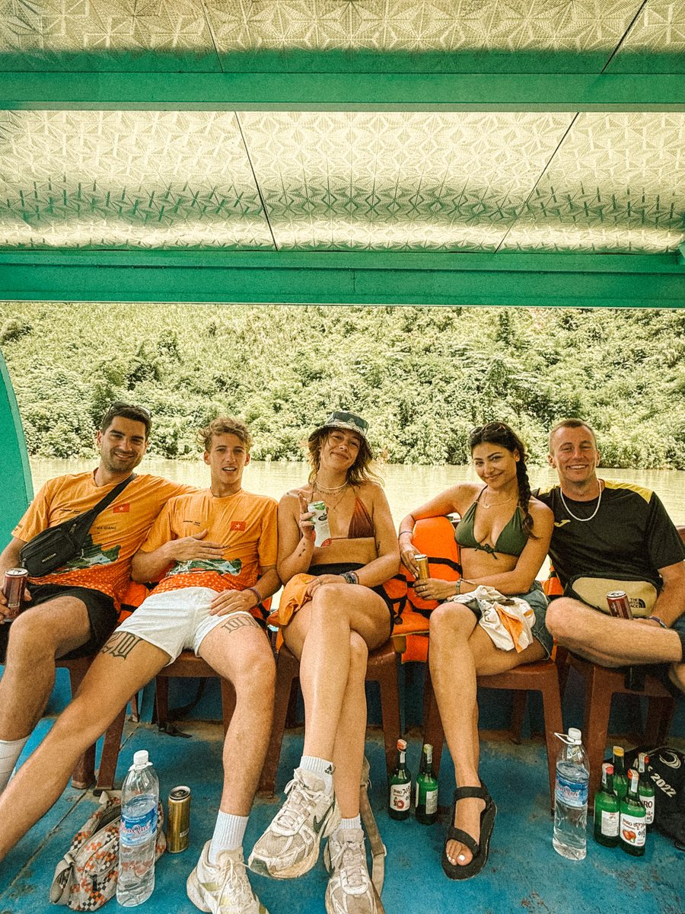
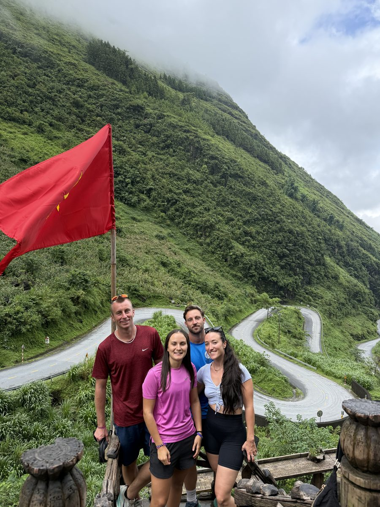
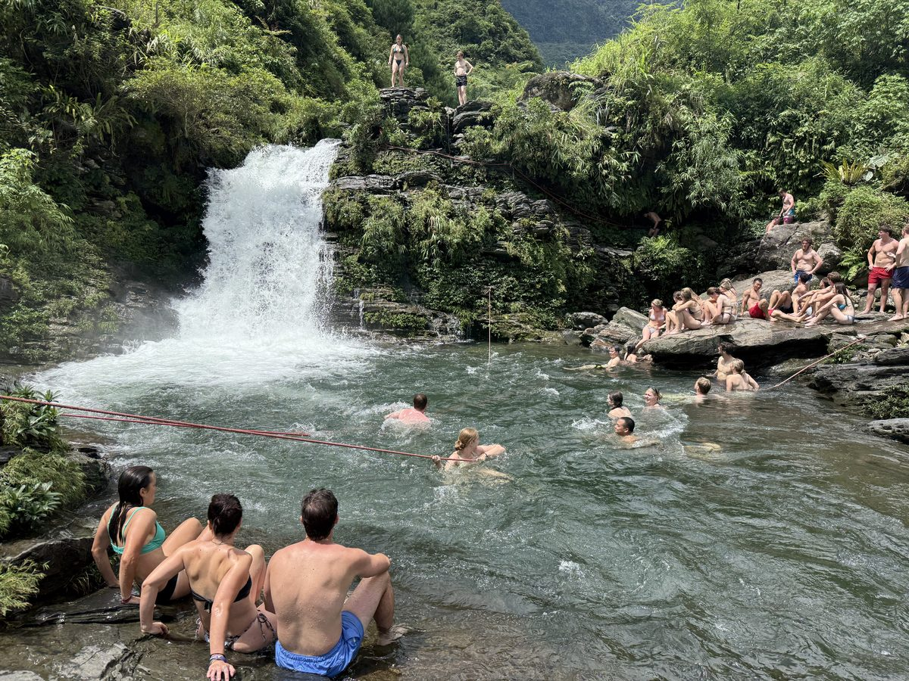
The way back
Two options. The direct return via Mau Due, shorter, which lets you catch a bus the same evening. Or the detour via Du Gia, a greener valley with a waterfall and a swim, which adds a night and a lot to the trip.
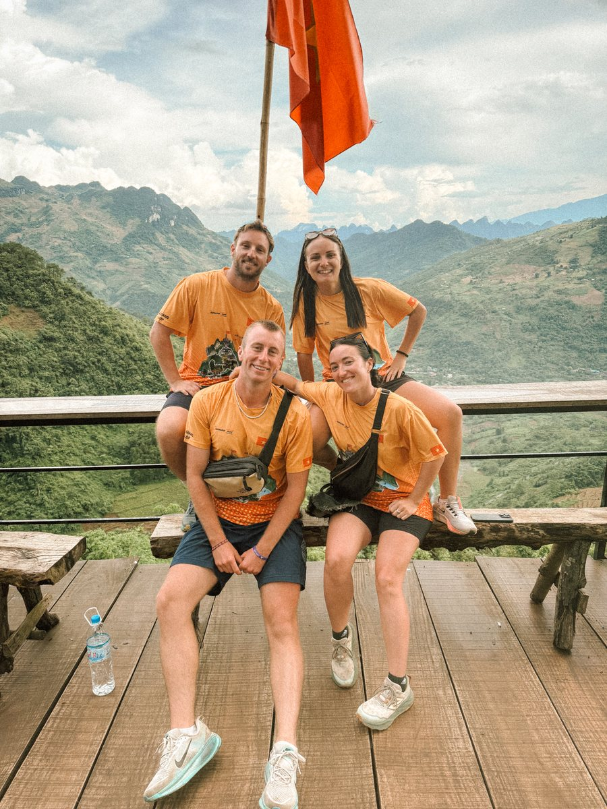
I could not tell you the names of the villages where we slept. And that is exactly what I recommend you do.
When you go with drivers, you do not worry about the route. You do not look at the map, you do not look for the next stop, you book nothing. That is the whole point of the formula, and it is what makes these days restful despite the road.
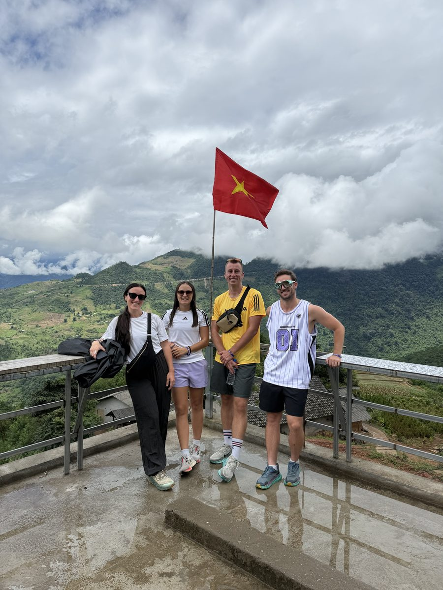

The budget
The loop is almost always booked as a package, which makes the maths simpler.
Budget about a hundred and fifty to two hundred euros per person for three days with an easy rider, transport from Hanoi often included. The package usually includes the rider, fuel, homestay nights, meals and entry to the sites.
If you ride yourself, renting a semi automatic costs around ten to fifteen euros a day, plus fuel. You save on the rider, you pay for your nights and meals as you go, and you take the risk described above.
To budget for in every case: the border area permit, the boat on the Nho Que, drinks and tips. Withdraw cash in Ha Giang before you leave, ATMs become rare as soon as you climb.
300 € with Jasmine, all included. There is nothing to add along the way.
There is an option to get a private room for an extra fee. Without it, you sleep in a dorm or a shared room, which is also part of the experience.
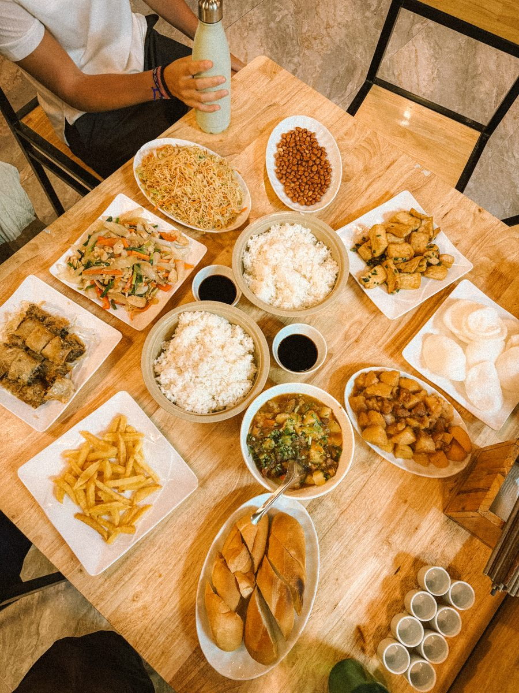
Where to stay
Homestays are the norm along the whole loop, and it is not a default choice: it is a big part of what makes the trip worth it.
In practice, a family house with a dorm of mattresses on the floor under mosquito nets, shared bathrooms, a meal eaten all together at the same table and often some local happy water served at the end of the evening. Comfort is basic, the welcome is not.
If you go through an agency, accommodation is already booked and you have nothing to do. On your own, you can find a bed on the day at each stop, except in high season and at weekends.
Bring earplugs. A dorm of fifteen people after a day on a motorbike is noisy.
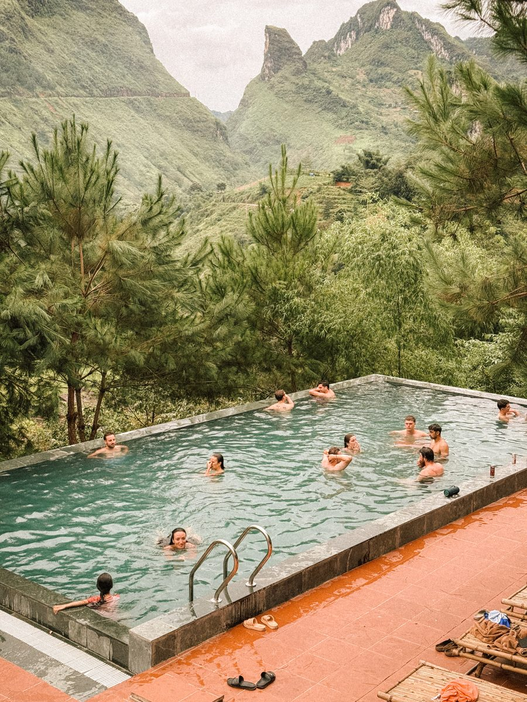
What to pack
Something warm. It is ten to fifteen degrees cooler at altitude than in Hanoi, and the wind on the bike does the rest. A fleece and a windbreaker, even in summer.
Something to stay dry. A downpour comes quickly. A poncho is enough, agencies often lend them, but protect your bag separately.
Only a small bag. Your main luggage stays at the hotel in Ha Giang or Hanoi. On the bike, you take two days' worth of things, no more.
Cash. Small notes, for cafés, site fees and tips.
Your papers. Passport and border area permit on you, not at the bottom of your bag.
Two things I would pack again without hesitation. Wired earphones, and sportswear to be comfortable on the bike for hours.
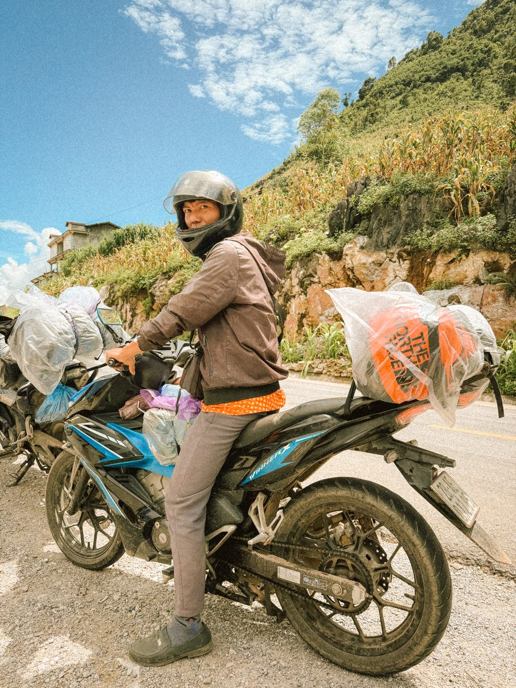
Mistakes to avoid
Doing it in two days. It can be done, but you spend the loop riding without ever stopping, and you miss exactly what you came for.
Riding without an international motorbike permit thinking nobody will notice. The problem is not the fine, it is the insurance that falls through just when you need it.
Booking without checking whether the border area permit is included. It is recent, and not all agencies have added it to their package yet.
Coming in July or August. The region is magnificent, but the monsoon turns the road into an ice rink and regularly cuts off entire sections.
Underestimating the cold. It is the most common mistake among people arriving after a month in Southeast Asia in flip flops and a T shirt.
Nothing went wrong and nothing was overpaid, because everything was included in the package. That is the main advantage of going through an agency on this loop.
The real thing to know about Jasmine, and it is the only flaw I found: it is a young, party oriented agency, with big groups. If you are looking for something calmer, other agencies run the loop with fewer people and probably fewer parties. There is something for everyone.
But if you are coming to meet people, then it is the one I recommend the most.
Shall we plan your trip together?
This guide gives you the outline. If you want to go further, I build your itinerary with you: the route stage by stage, where to stay, the journeys between towns and the activities that are really worth the day.
We start from your dates, your budget and what you want to experience. You leave with a plan that is ready to follow, knowing what to book in advance and what can wait until you get there.
Three packages, from 59 € for feedback on your plan to 249 € for the full itinerary. The first chat is free, with no commitment.
The links and gear mentioned
The booking platforms, eSIMs, banks and insurance I use when I travel are all on one page, with my referral codes.
Page checked and updated on .